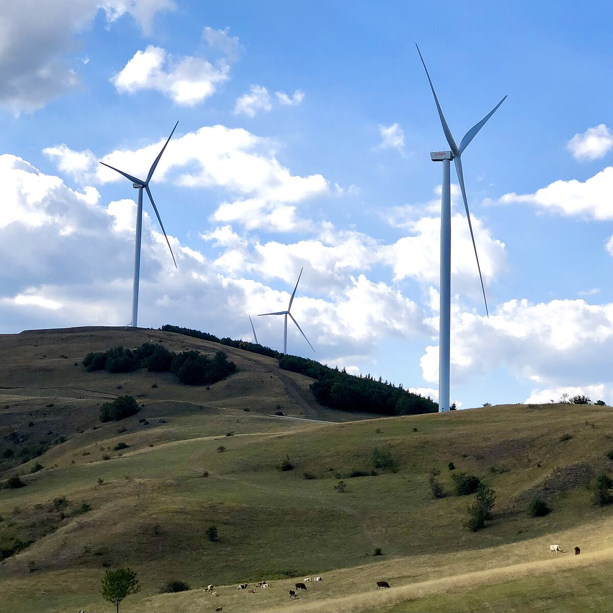
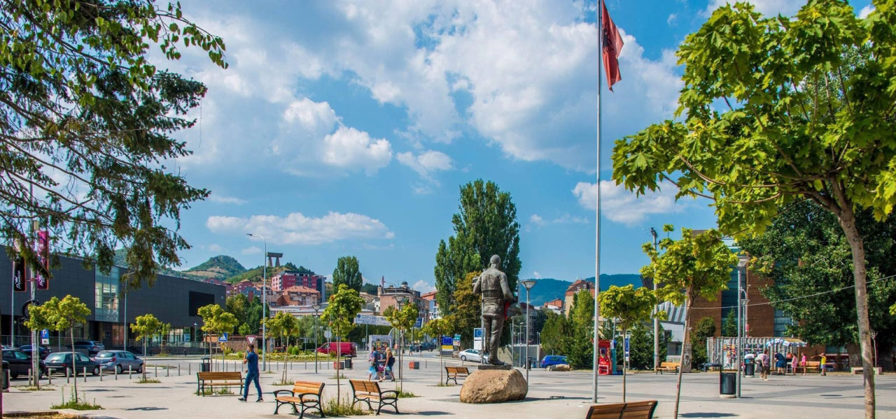
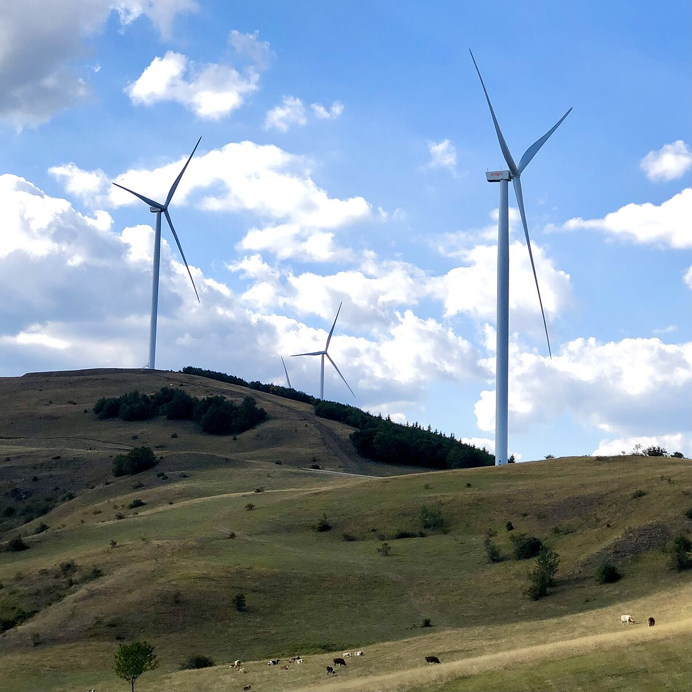
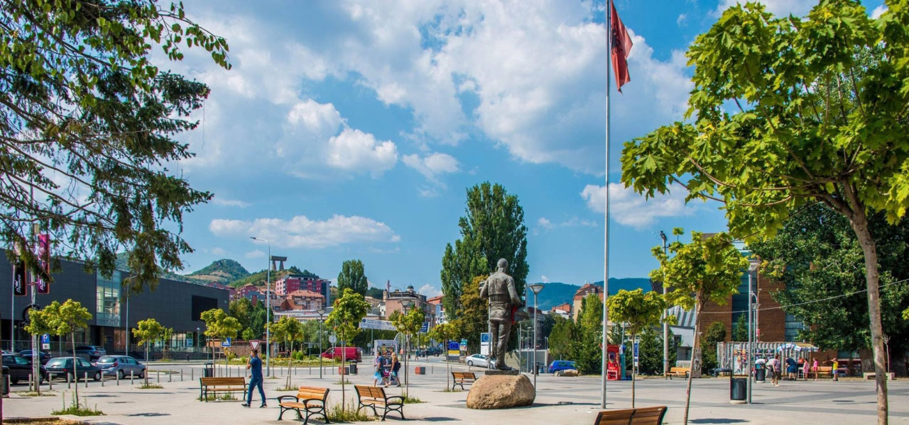

Pse të vizitoni Mitrovicën?
Mitrovica është një qytet unik i ndarë nga lumi Ibër, ku kultura dhe historia ndërthuren me energjinë moderne të qytetit. Vizitorët do të zbulojnë një trashëgimi të pasur, mikpritje dhe destinacione të papritura.
Vendet që nuk duhen humbur
Ura mbi Ibër
Simboli më i njohur i qytetit, që lidh dhe ndan Mitrovicën.
Miniera e Trepçës dhe muzeu i saj
Një pasuri e trashëgimisë industriale që mund të vizitohet.

Muzeu i Mitrovicës
Qendër kulturore që ruan historinë lokale.
Bajgora & Shpella
Shëtitje në natyrë dhe eksplorim malor për aventurierët.
Pamje nga Mitrovica
 



reth mitrovices
Mitrovica është një ndër qytetet më të rëndësishme dhe më të veçanta në Kosovë, me një histori të gjatë dhe të pasur që shtrihet përtej shekujve. Emri i saj vjen nga kisha e Shën Dimitrit, e ndërtuar në periudhën e mesjetës. Qyteti ndodhet në veri të Kosovës dhe është i njohur për ndarjen e tij nga lumi Ibër, i cili ndan pjesën veriore dhe jugore të qytetit. Mitrovica ka pasur rëndësi të madhe industriale, veçanërisht gjatë kohës së ish-Jugosllavisë. Ajo është e njohur për kombinatin e Trepçës – një nga pasuritë më të mëdha minerare në Ballkan, ku janë nxjerrë minerale të çmuara si plumbi, zinku dhe argjendi. Ky kombinat ka luajtur një rol të madh në zhvillimin ekonomik të qytetit dhe të gjithë rajonit. Gjatë viteve të fundit të shekullit XX, Mitrovica u bë një nga qendrat kryesore të tensioneve ndëretnike pas luftës në Kosovë. Ndarja e qytetit në dy pjesë – me shumicë shqiptare në jug dhe serbe në veri – ka krijuar një situatë të ndërlikuar politike dhe sociale që ende ndikon në jetën e përditshme të qytetarëve. Megjithatë, Mitrovica mbetet një qytet me potencial të madh, plot rini, kulturë, histori dhe energji. Përkundër sfidave, qytetarët e saj vazhdojnë të punojnë për paqe, zhvillim dhe një të ardhme më të mirë.